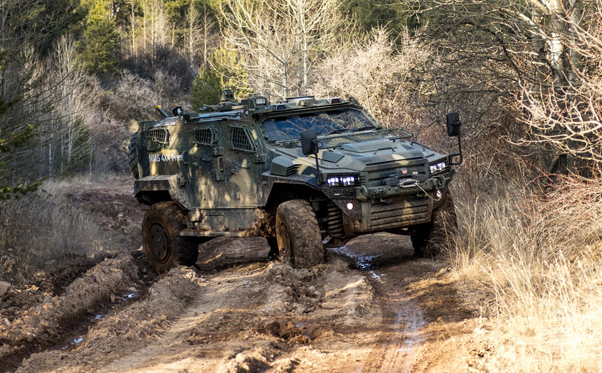
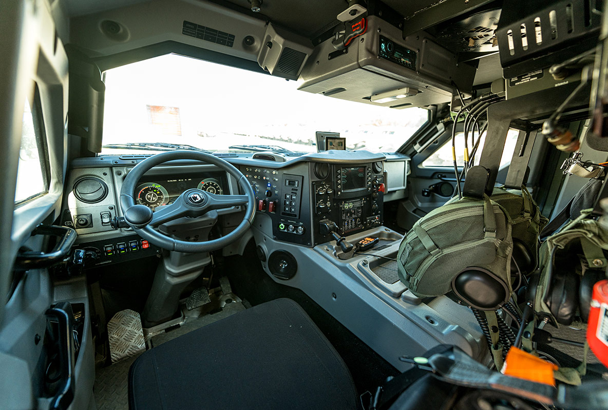
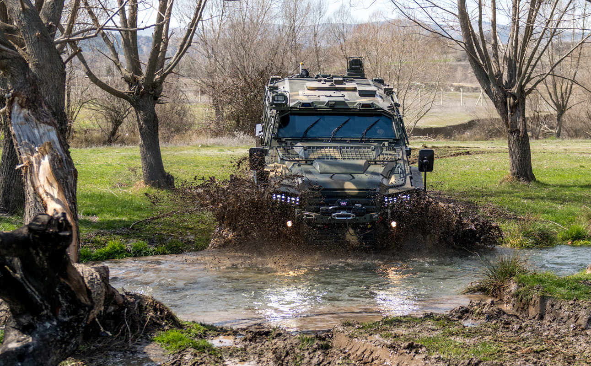

❮
❯
Nurol Makina tarafından geliştirilen hafif sınıf 4x4 taktik tekerlekli zırhlı araç platformu.
NMS 4x4, Nurol Makina’nın geliştirdiği hafif taktik tekerlekli zırhlı araçtır. Türkiye’de YÖRÜK 4x4 adıyla da anılan platform, şehir içi görevler, devriye, keşif, sınır güvenliği, komuta-kontrol ve silah taşıyıcı görevleri için tasarlanmıştır.
Araç, kompakt boyutları sayesinde dar alanlarda yüksek hareket kabiliyeti sağlarken, aynı zamanda yüksek balistik ve mayın koruma seviyesi sunar. Modüler yapısı sayesinde farklı görev sistemleri ve uzaktan komutalı silah istasyonlarıyla uyumlu şekilde kullanılabilir.
Nurol Makina’nın ürün tanıtımında NMS 4x4; 9 kişilik kapasitesi, güçlü motoru, bağımsız süspansiyonu, yüksek yol hızı ve gelişmiş görev ekipmanlarıyla modern güvenlik ve savunma ihtiyaçlarına uygun bir platform olarak öne çıkar.



| Araç Sınıfı | 4x4 hafif taktik tekerlekli zırhlı araç |
| Üretici | Nurol Makina |
| İhracat Adı | NMS 4x4 |
| Türkiye’de Bilinen Adı | YÖRÜK 4x4 |
| Toplam Personel Kapasitesi | 9 kişi |
| Mürettebat Düzeni | 2 + 7 |
| Azami Yüklü Ağırlık | Yaklaşık 10 ton sınıfı |
| Motor | Turbo dizel |
| Motor Gücü | 300 bg |
| Şanzıman | Otomatik şanzıman |
| Tahrik Düzeni | 4x4 |
| Azami Hız | 140 km/s |
| Menzil | Yaklaşık 700 km |
| Süspansiyon | Bağımsız süspansiyon |
| Yerden Yükseklik | Yüksek arazi kabiliyeti sağlayan zırhlı gövde yerleşimi |
| Tırmanma Kabiliyeti | %70 |
| Yan Eğim | %40 |
| Dik Engel Aşma | 0,5 m |
| Hendek Geçişi | 0,9 m |
| Sudan Geçiş | 1 m |
| Balistik Koruma | Yüksek balistik koruma seviyesi |
| Mayın Koruma | Yüksek mayın koruma seviyesi |
| Koltuk Sistemi | Mayın etkisini azaltmaya yönelik korumalı iç yerleşim |
| Silah Sistemi Entegrasyonu | Uzaktan komutalı silah sistemi entegrasyonuna uygun |
| Silah Seçenekleri | 7.62 mm / 12.7 mm / 40 mm otomatik bombaatar |
| Elektronik Sistemler | Görev bilgisayarı, haberleşme ve görev ekipmanı entegrasyonuna uygun altyapı |
| Gözetleme / Görüş | Gece-gündüz görev yapısına uygun görüş destek sistemleri |
| CBRN Koruma | Opsiyonel koruma sistemleriyle desteklenebilir görev yapısı |
| Görev Rolleri | Devriye, keşif, komuta-kontrol, silah taşıyıcı, personel taşıyıcı |
| Öne Çıkan Özellik | Kompakt boyutta yüksek hız, yüksek koruma ve çok görevli kullanım |